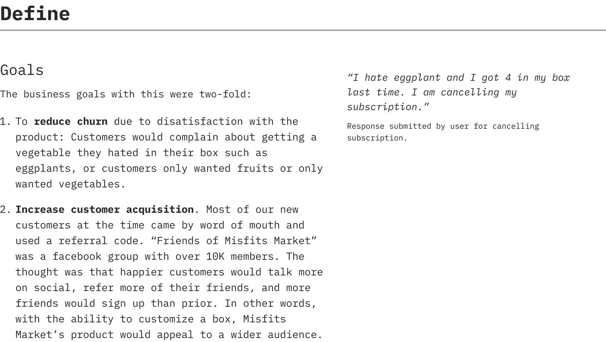
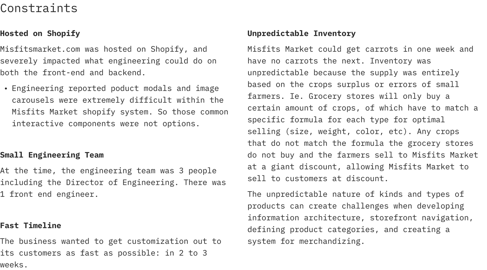
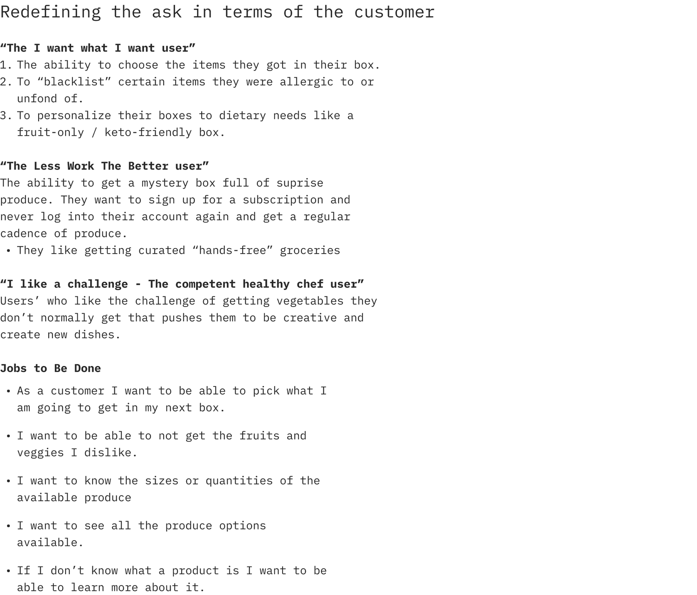
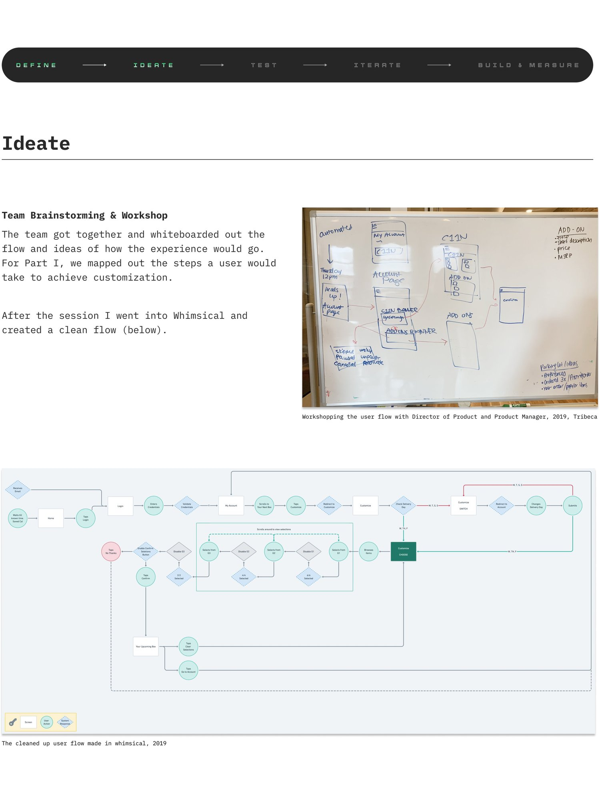
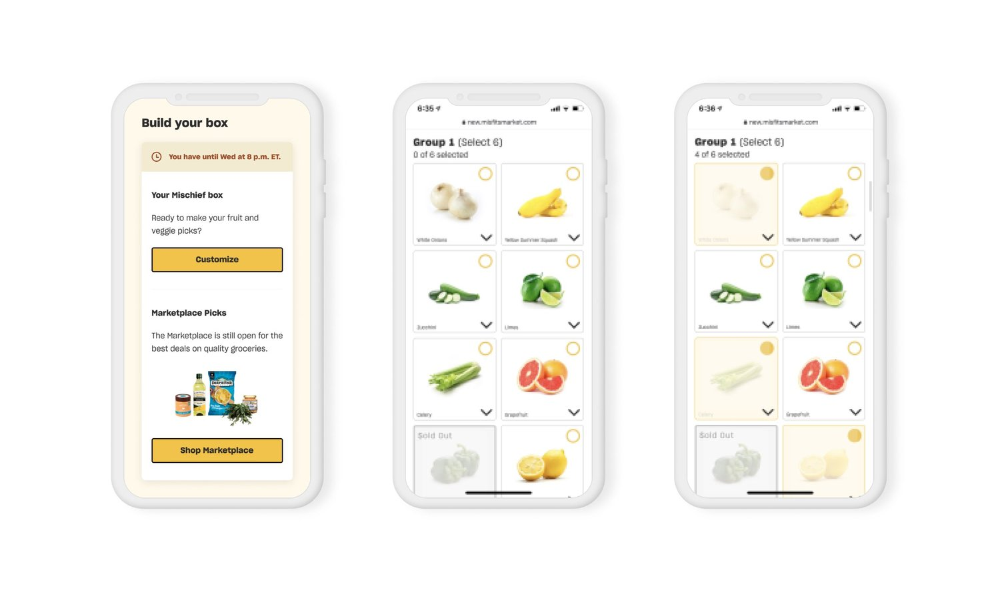
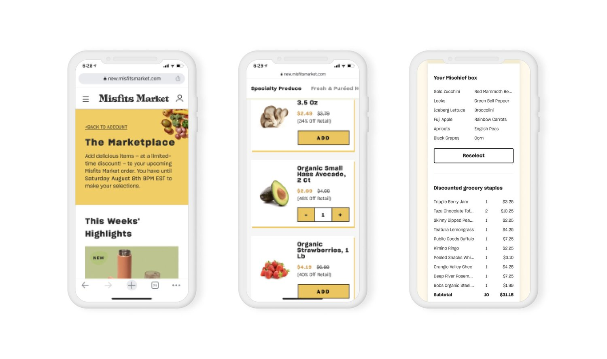
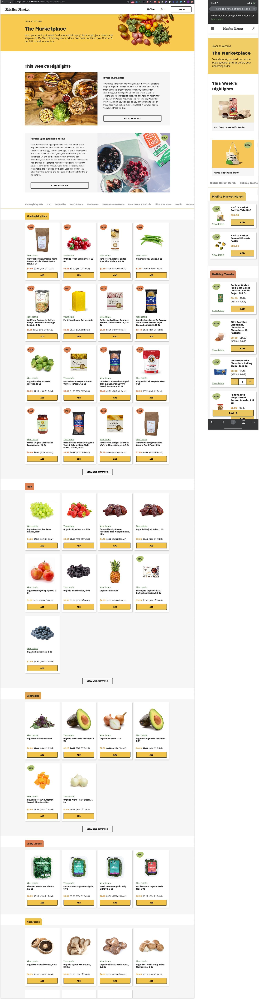
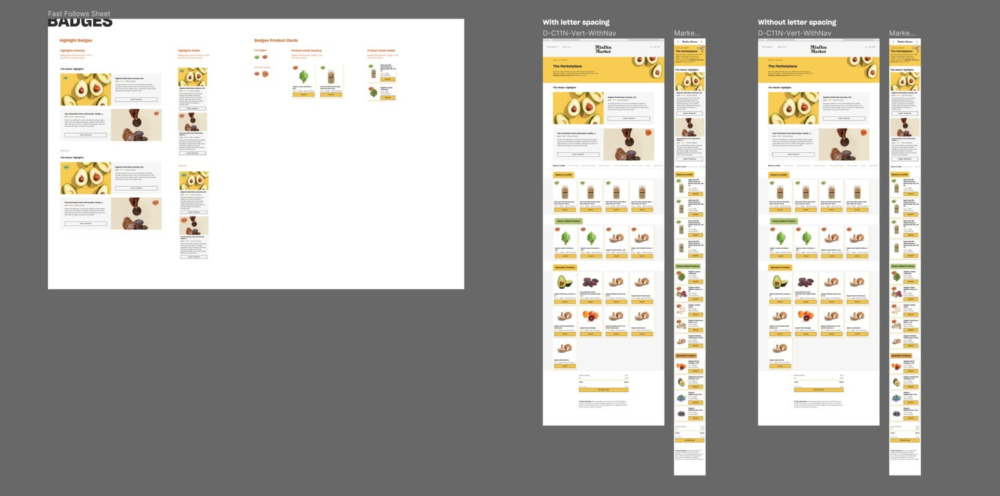
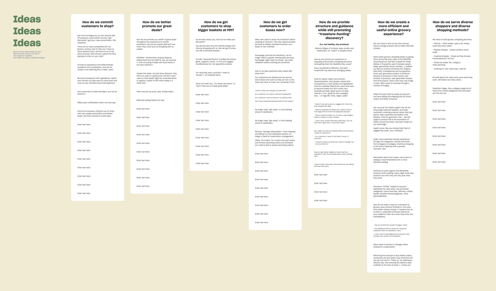
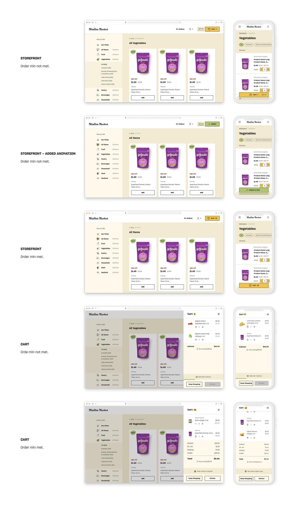

Case Study
From a Subscription to an E-commerce Store

The Goal
Misfits Market wanted to move from a CSA-style subscription box to a members-only grocery store and create a flexible shopping experience




Testing & Validation
Testing the experience with 5 users remotely unmoderated with trymyui.com
Key Findings
Summary: Overall all testers completed the test successfully and had no issues reaching the order minimum and completing their order and conceptually understood when they completed it as well as how to do so. The only small instance of confusion occurred when users expected there to be a 'checkout' step and wanted to 'confirm' their order. This is due to MM's 'auto-confirm' cart that evolved from MM's subscription architecture, where a user's order was automatically confirmed once they met the order min and charged with the payment method on file the next day.
Action Items: From the insights I clarified the notion of a 'checkout' 'confirmation' experience by updating the CTA copy of the buttons in cart and modifying the Your Order Details page to feel more like a confirmation page.
Design
The user research findings were mainly around improving the wayfinding from customization to marketplace to order review. I made improvements to the design based on the findings and got it ready for hand off.




V2: Design
A fully fledged e-commerce grocery store with an order minimum
Iteration
Workshop & Brainstorming: I ran a few workshops with stakeholders to ideate on the experience principles outlined above and to understand users' shopping behavior such as cadence (how often they shop, whether weekly or biweekly), how long they shop for (duration), and how much they want and buy (% ordering mischief (smaller) vs. madness (larger). So I uncovered them in Misfits Market Heap dashboard.

The Main Feature: $30 Order Minimum Progress Bar
- Always visible and accessible (In cart and on cart button in storefront)
- Once user meets order min the progress bar goes away and the cart count and total is emphasized.
- $30 min on cart button on storefront
- Item added animation

Results
Overall it was a success. Order minimum enabled Misfits Market to start its series C round of funding.
Read more: Misfits Market Reveals $200M in Series C Funding (Progressive Grocer); Discount Grocery Startup Misfits Market raises $200M (Techcrunch); Misfits Funding Round Brings Valuation to $1.1 Billion (Bloomberg)
KPIs
- Increased number of orders
- Increased AOV
- Increased UPO
Honeydew
Creating the Misfits Market Figma Design System
By the first iteration of the Misfits Market line item pricing storefront I had completed the first version of the Misfits Market design system, giving it the name Honeydew.